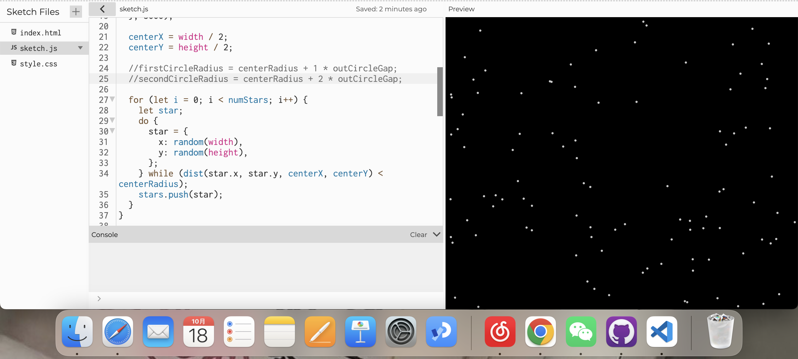
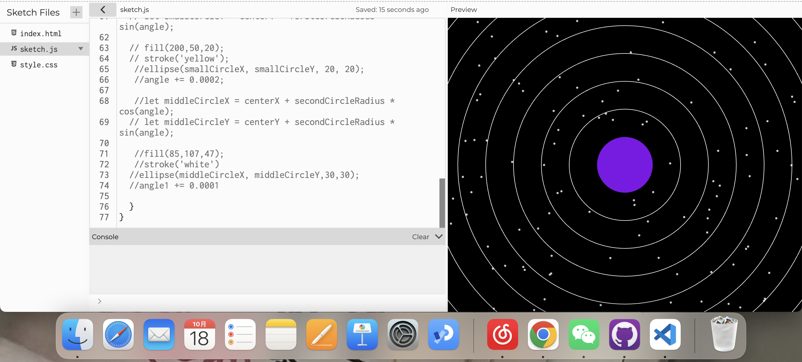
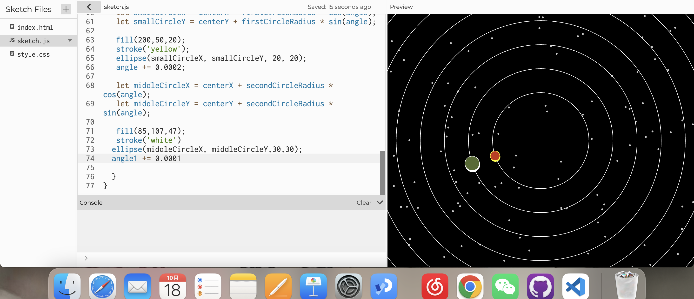

First, I made a cosmic starry sky background. The stars in the background are random dots. Also, I fixed the position of the sun in the canvas.
To mimic the planetary rotation paths, I made 8 hollow circles using the bad circulation formula.
I added two small circles to simulate planetary rotation.
